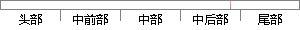

在后台部分，介绍了后台提供的常用API和数据库表的设计。
片段位置图

相似结果|
相似片段 1：三个部分[34][35]。在系统前台设计中，主要提供网站的主页显示，包括商品信息等内容的显示，并提供商品订购功能。用户可以在页面上搜索商品，并点击查看商品的具体信息。在系统的整个设计方案中，数据库的设计也是很重要的一个组成部分，但只有管理员才具有在后台操作数据库的权限。
|
※ 片段修改建议 ※
近似词参考：- 后台：背景
- 部分：部门 部份
- 介绍：先容
- 后台：背景
- 提供：供给 供应
- 常用：经常使用
- 设计：计划
系统自动生成语句：在背景部门，先容了背景供给的经常使用API和数据库表的计划。
注：本片段修改建议为系统自动生成，仅供参考。